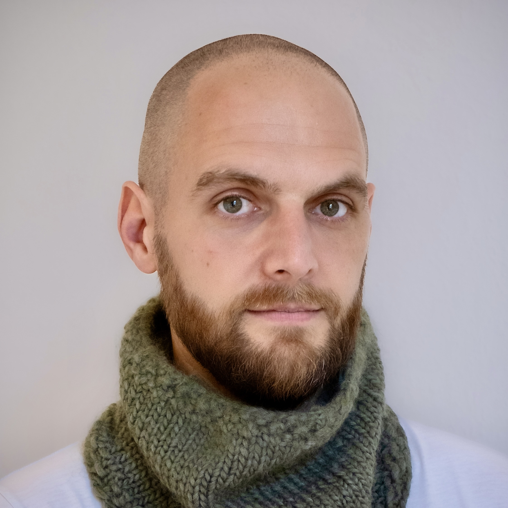
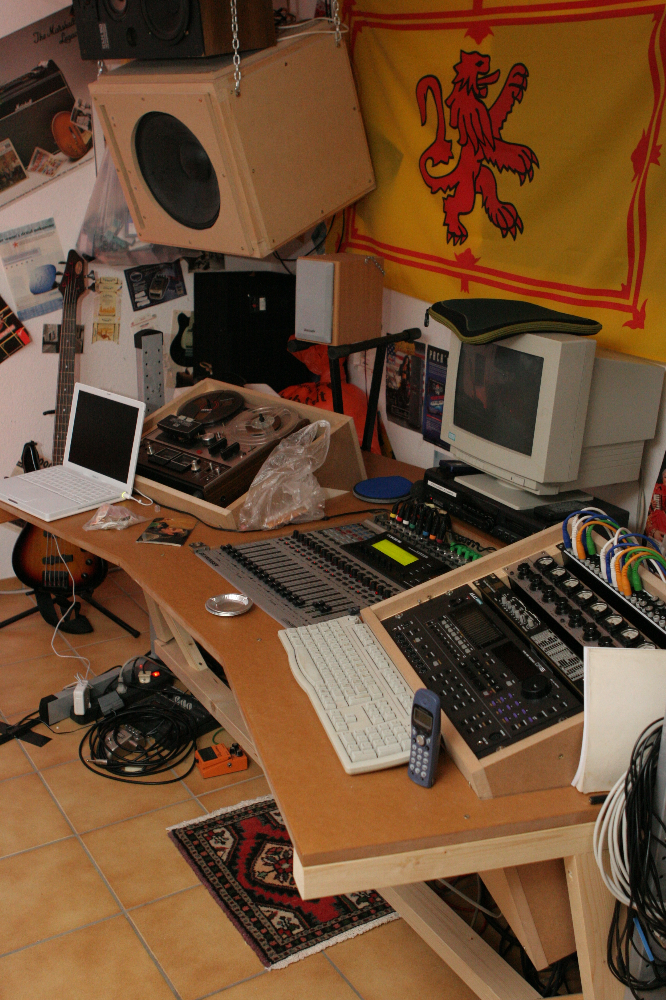
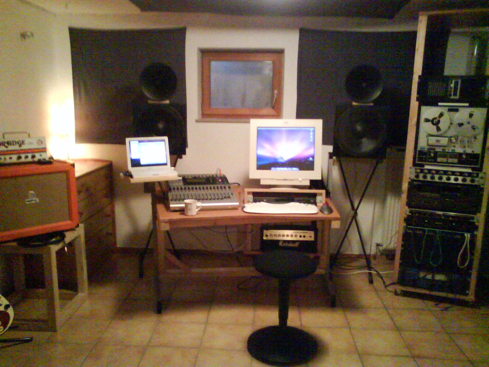
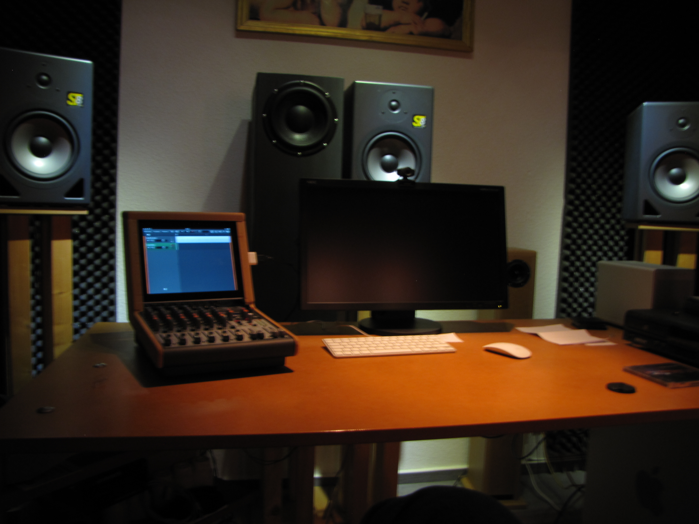
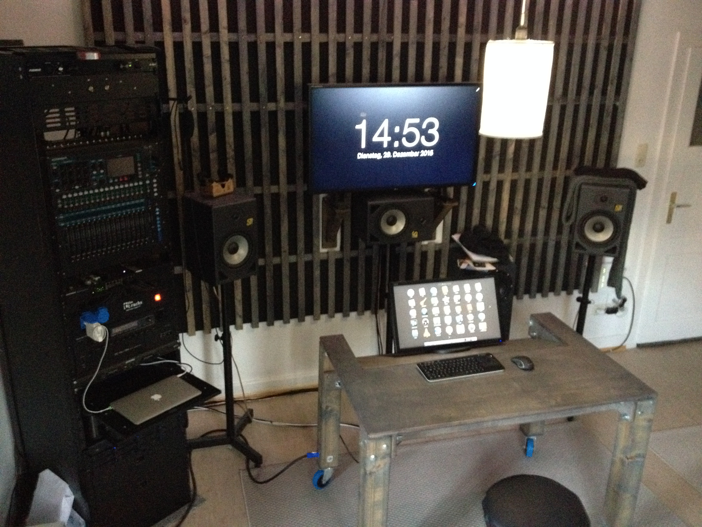
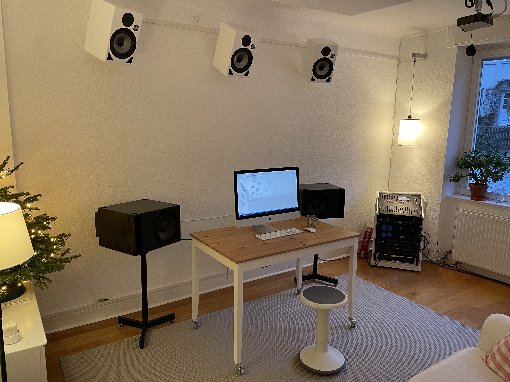
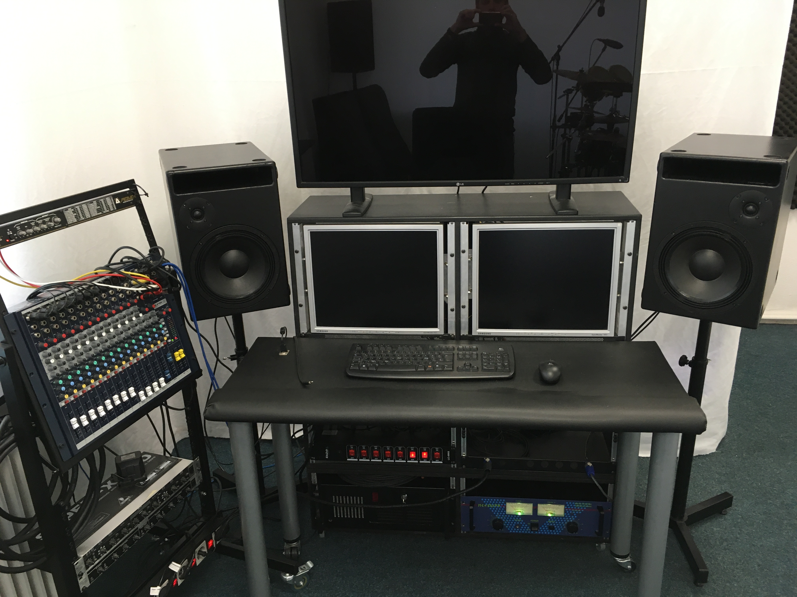
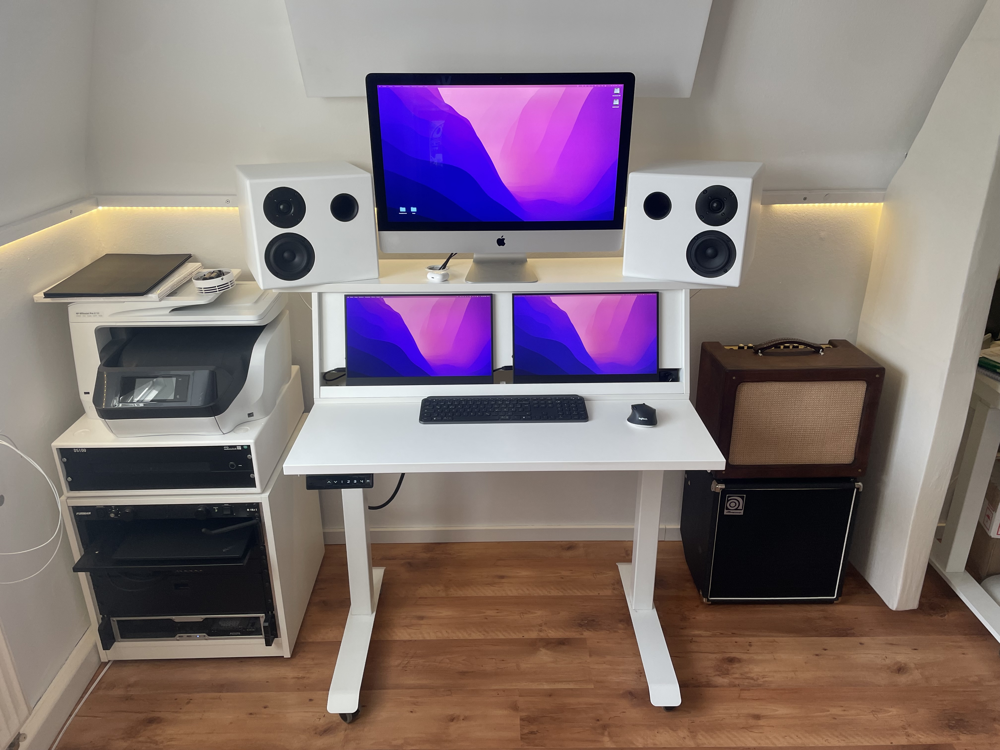
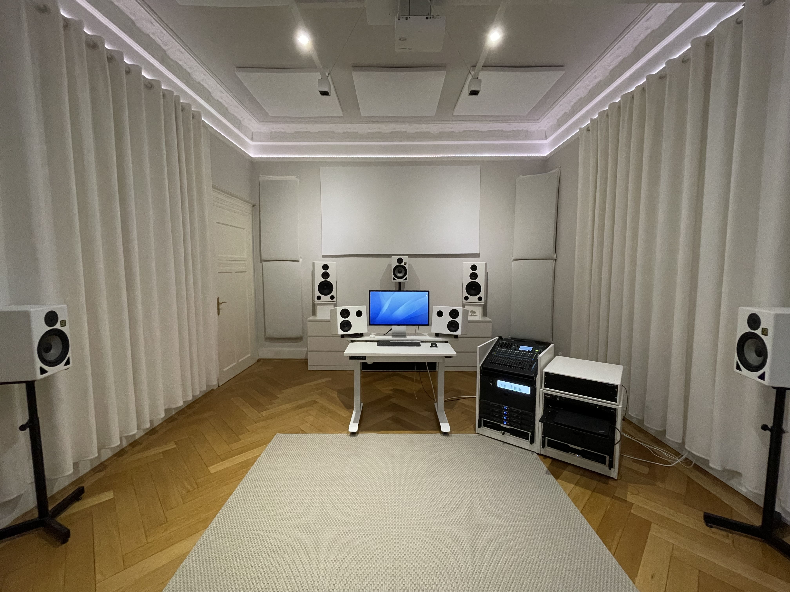
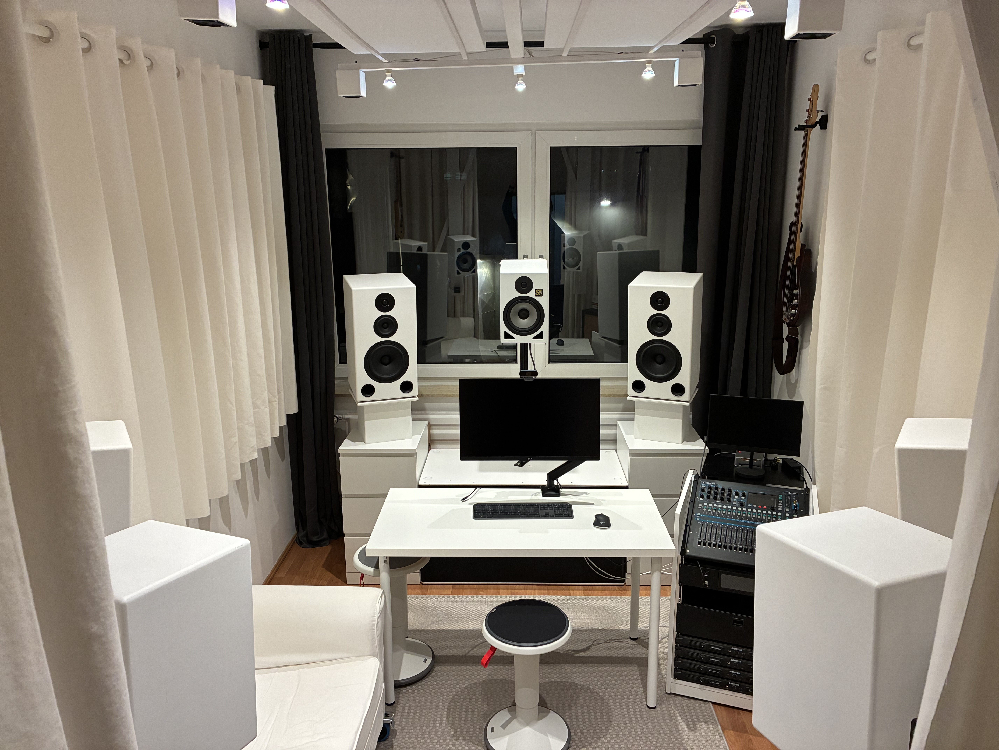

Open Source Projects


About
I build software for pro audio — control tools, protocol bridges and audio routing utilities, all open source and cross-platform. The projects here have been running alongside my day job for years; a couple of them directly fed into tools that eventually shipped commercially at d&b.
By day I am at d&b audiotechnik, where I lead Create.Control — a next-generation immersive audio creative software suite — as Senior Product Designer UI/UX. In practice the role straddles product ownership and technical lead: defining requirements, driving architecture decisions, specifying and prototyping UX, and acting as the main link between stakeholders and the external cross-functional team building the product.
The pairing of hands-on engineering depth with end-to-end product ownership — from first concept through design to shipped release — is the thread running through all of it.
Expertise
Career
-
2024 – present
Senior Product Designer UI/UX — Immersive Audiod&b audiotechnik GmbH & Co. KG, Backnang
- d&b-side lead for Create.Control, a next-generation immersive audio creative software suite
- Combining product ownership with technical lead: requirements, architecture decisions, UX specification and prototype validation
- Primary interface between product management, stakeholders and the external cross-functional development team
-
2022 – 2024
Senior Software Engineerd&b audiotechnik GmbH & Co. KG, Backnang
- Technical lead for En-Bridge software and related d&b Soundscape tools (C++ / JUCE, Windows / macOS / iOS / Linux)
- Technical responsibility for third-party network protocol integration (C++ / JUCE)
-
2016 – 2022
Software Engineerd&b audiotechnik GmbH & Co. KG, Backnang
- d&b system control software suite (R1 and ArrayCalc) development and d&b Soundscape integration (C++ / Qt, Windows / macOS / iOS)
- Third-party network protocol integration tooling (C++ / JUCE)
- AES70/OCA control protocol stack extension (C++)
-
2010 – 2016
Development Engineer & Technical Product ManagementVitronic Dr.-Ing. Stein Bildverarbeitungssysteme GmbH, Wiesbaden
- Development of certified 3D measurement systems including measurement software, sensor data processing and graphical control interfaces (C++ / Qt)
- Steering of hardware, software and industrialisation development for 3D measurement systems in logistics
- Interfacing between sales, marketing, service and technical departments
-
2005 – 2010
Dipl.-Ing. (FH) Fernsehtechnik und elektronische MedienHochschule RheinMain, Wiesbaden
Personal
► Setups & Workspaces 2005 – 2026 · homestudio, workstation and rack builds over the years

2005 Cellar DIY Homestudio
2009 Cellar DIY Homestudio
2011 Audio Workstation
2015 Modular Rack & Desk
2020 Home Workstation
2020 Rehearsal Room Workstation
2022 Compacted Home Workstation
2024 Homestudio
2026 LOGIC Studio